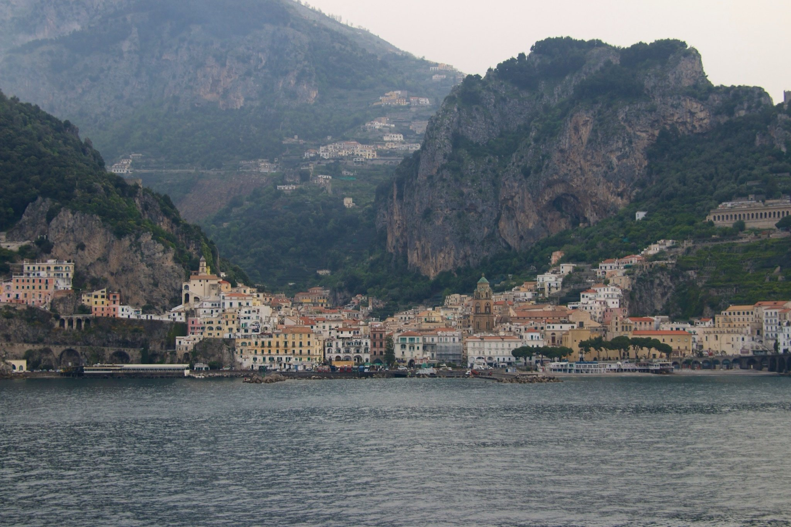

Mark Elster
Historic Reflections 6-1
The Itinerary, day 6, part 1

Amalfi and Ravello
Early in the morning our craft, in which we are now feeling very much at home, slowly cruises past the Amalfi coast (Costiera Amalfitana) just south of Naples in the Salerno region, introducing our next unique destinations. The first feature that catches your eye are the numerous caves in the craggy limestone ramparts. Gradually it dawns on you that many of the caves are occupied—mostly as storage areas for farm detritus, but in one case, by an orchard!
Although the rocky steep terrain presents a similar challenge to the Amalfians, their vernacular solutions are quite different from Monaco's—in contrast to the latter's urbanity, Amalfi clearly projects a small town agrarian character, even from our vantage two thousand meters off the shore. The main village is nestled, wedged really, prying apart the narrow and quite steep valley between two foreboding monoliths and a small mountain range above.
The town began as a vibrant trading post (grains, wood and slaves! from the inland) and shipbuilding center. The lemons were first brought to the Amalfi Coast centuries ago on trade routes from the Middle East and were treasured by sailors for warding off scurvy and other ailments at sea. Their large size, thick skin and sweet nature (you can actually eat them whole, or like an orange) make them ideal as an ingredient, most famously in the popular aperitif, Limoncello.
The economy is now actually dominated by tourism, but the historical crop of a unique type of eponymous lemons is clearly still robust. At first the orchards are hard to make out because the fruiting ones are covered in what looks like heavy black fish netting—and after another dawn breakfast aboard wondering if our eyes deceive our senses, we all six stow away on the tenders for our tour of the little mountain village of Ravello, somewhere up above, anchored in the clouds.
Although the rocky steep terrain presents a similar challenge to the Amalfians, their vernacular solutions are quite different from Monaco's—in contrast to the latter's urbanity, Amalfi clearly projects a small town agrarian character, even from our vantage two thousand meters off the shore. The main village is nestled, wedged really, prying apart the narrow and quite steep valley between two foreboding monoliths and a small mountain range above.
The town began as a vibrant trading post (grains, wood and slaves! from the inland) and shipbuilding center. The lemons were first brought to the Amalfi Coast centuries ago on trade routes from the Middle East and were treasured by sailors for warding off scurvy and other ailments at sea. Their large size, thick skin and sweet nature (you can actually eat them whole, or like an orange) make them ideal as an ingredient, most famously in the popular aperitif, Limoncello.
The economy is now actually dominated by tourism, but the historical crop of a unique type of eponymous lemons is clearly still robust. At first the orchards are hard to make out because the fruiting ones are covered in what looks like heavy black fish netting—and after another dawn breakfast aboard wondering if our eyes deceive our senses, we all six stow away on the tenders for our tour of the little mountain village of Ravello, somewhere up above, anchored in the clouds.



It is very apparent after just a few turns why our busses are three–quarter length—the climb up the steeply walled valleys past the terraced and trellised orchards is breathtaking and a marvel of road engineering that would never pass a full length coach. Once again the road itself is a source of wonder and entertainment. And as the clouds begin to part we emerge through a long tunnel at Ravello.


While the patriarch and matriarch take lunch upon the Piazza Centrale, we scurry to take in the width and breadth of the place and promptly fail as I (with an assist from Christoff) divert and then linger in the Ceramiche D'Arte Factory Pascal. I am smitten by the bold geometric and colorful designs and slowly begin to assemble a list of items whose numbers mount enough to draw the attentions of the owner's son and then Pascal himself! As I discuss our pending purchase with Christoff and Pascal (as NancyEllen rolls her eyes but nods approval in the background) the place setting and accessories grows and grows. Stymied by gaps in the collection's dinnerware Mark proceeds to describe what he is looking for to an enthusiastic Pascal who readily collaborates. Soon several new custom–commissioned designs are hatched to meet Mark's sudden vision of what a "Ravello Dinner" would look like on the table.
In no time our purchase is documented and papers signed for payment of $2,800 US and shipping instructions for delivery in ten weeks. As we leave, an overjoyed Pascal takes NancyEllen aside and remarks in fairly good English, "this is the first time I have seen man come in shop and buy like lady." That is when we posed for our picture with him.
In no time our purchase is documented and papers signed for payment of $2,800 US and shipping instructions for delivery in ten weeks. As we leave, an overjoyed Pascal takes NancyEllen aside and remarks in fairly good English, "this is the first time I have seen man come in shop and buy like lady." That is when we posed for our picture with him.
After an abridged bus jaunt along the coast we slow and crank over into the first of numerous hairpin turns ascending the flanks of Monte Cerreto (1,315 metres, or 4,314 feet) towards the quaint hamlet clinging to the mountainside whose chief product is tourism, and derivative ceramiche (ceramics), linen, and handmade–paper shops. It also is one of the most desirable, and therefore expensive locations for luxury vacation properties (similar to Amalfi).
Almost immediately our speculations about the appearance of the orchards are confirmed. An article about the Amalfi lemon business in the New York Times* (http://tinyurl.com/nm8wmjc) relates that, "All lemons certified from Amalfi must be of the 'sfusato [Amalfitano]' family, which comes from the Italian word for spindle, because of their pointed ends. These grow only in the microclimate of the Amalfi Coast, where cooling breezes are trapped between steep mountain valleys…" tempering the Mediterranean sun. We are told that the netting keeps the birds out and the lemon trees warm during cool weather.
* The NYT article and attached video interview is interesting and worth a look. Be forewarned that the usual predictable leftist tropes abound as the author joins in the lament of the orchardist's battle against the free market so typical of the protectionist European socialist mentality (and regrettably, ever more the case in our formerly enlightened country).
Almost immediately our speculations about the appearance of the orchards are confirmed. An article about the Amalfi lemon business in the New York Times* (http://tinyurl.com/nm8wmjc) relates that, "All lemons certified from Amalfi must be of the 'sfusato [Amalfitano]' family, which comes from the Italian word for spindle, because of their pointed ends. These grow only in the microclimate of the Amalfi Coast, where cooling breezes are trapped between steep mountain valleys…" tempering the Mediterranean sun. We are told that the netting keeps the birds out and the lemon trees warm during cool weather.
* The NYT article and attached video interview is interesting and worth a look. Be forewarned that the usual predictable leftist tropes abound as the author joins in the lament of the orchardist's battle against the free market so typical of the protectionist European socialist mentality (and regrettably, ever more the case in our formerly enlightened country).

The spectacular views sweep in every direction as Ravello clings to its perch upon a spiny ridge between the valleys of Astrani and Minori (the vista above overlooks Minori) one valley East of Amalfi. The small village of 2,500 residents is notable for the disproportionate share of massive centuries–old villas—a trend that continues to this day as we spy many new villas jostling their way into the crowded slopes. They are mostly forgettable architecturally, though picturesque examples of a queer blend of Norman and Byzantine styles betraying Middle Eastern (and North African) influences.